Show the code
# install.packages("tidyverse")Data Visualization
This document introduces the ggplot2 workflow for building clear and professional visualizations in R.
You will learn how to:
aes())facet_wrap() to compare groups# install.packages("tidyverse")library(tidyverse)Most ggplot charts follow this structure:
ggplot(data = DATA, aes(x = X_VAR, y = Y_VAR)) +
geom_...( ) +
labs(title = "...", x = "...", y = "...") +
theme_minimal()Key pieces:
aes): how variables map to visual elementsWe will use the built-in dataset mpg (fuel economy data).
mpg |> glimpse()Rows: 234
Columns: 11
$ manufacturer <chr> "audi", "audi", "audi", "audi", "audi", "audi", "audi", "…
$ model <chr> "a4", "a4", "a4", "a4", "a4", "a4", "a4", "a4 quattro", "…
$ displ <dbl> 1.8, 1.8, 2.0, 2.0, 2.8, 2.8, 3.1, 1.8, 1.8, 2.0, 2.0, 2.…
$ year <int> 1999, 1999, 2008, 2008, 1999, 1999, 2008, 1999, 1999, 200…
$ cyl <int> 4, 4, 4, 4, 6, 6, 6, 4, 4, 4, 4, 6, 6, 6, 6, 6, 6, 8, 8, …
$ trans <chr> "auto(l5)", "manual(m5)", "manual(m6)", "auto(av)", "auto…
$ drv <chr> "f", "f", "f", "f", "f", "f", "f", "4", "4", "4", "4", "4…
$ cty <int> 18, 21, 20, 21, 16, 18, 18, 18, 16, 20, 19, 15, 17, 17, 1…
$ hwy <int> 29, 29, 31, 30, 26, 26, 27, 26, 25, 28, 27, 25, 25, 25, 2…
$ fl <chr> "p", "p", "p", "p", "p", "p", "p", "p", "p", "p", "p", "p…
$ class <chr> "compact", "compact", "compact", "compact", "compact", "c…ggplot(mpg, aes(x = displ, y = hwy)) +
geom_point()
ggplot(mpg, aes(x = displ, y = hwy)) +
geom_point(alpha = 0.5)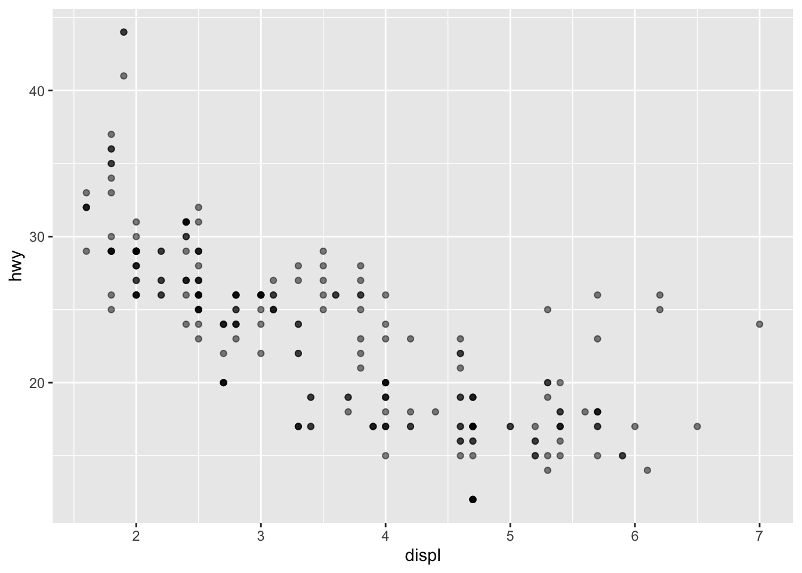
ggplot(mpg, aes(x = displ, y = hwy, color = class)) +
geom_point(alpha = 0.7)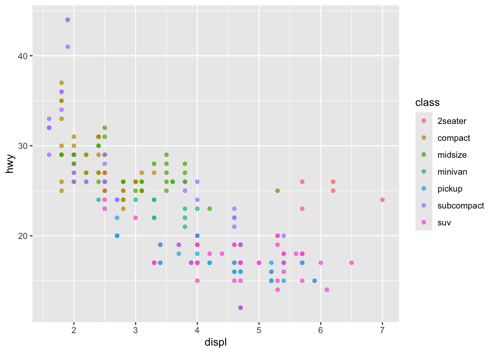
ggplot(mpg, aes(x = displ, y = hwy, size = cyl)) +
geom_point(alpha = 0.6)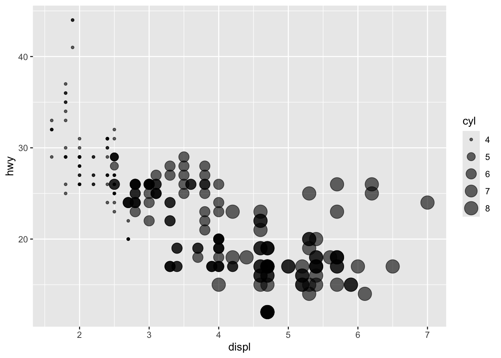
✅ Rule of thumb:
- color = ... inside aes() means it changes by data values
- color = "blue" outside aes() means fixed color
ggplot(mpg, aes(x = displ, y = hwy)) +
geom_point(alpha = 0.6) +
geom_smooth()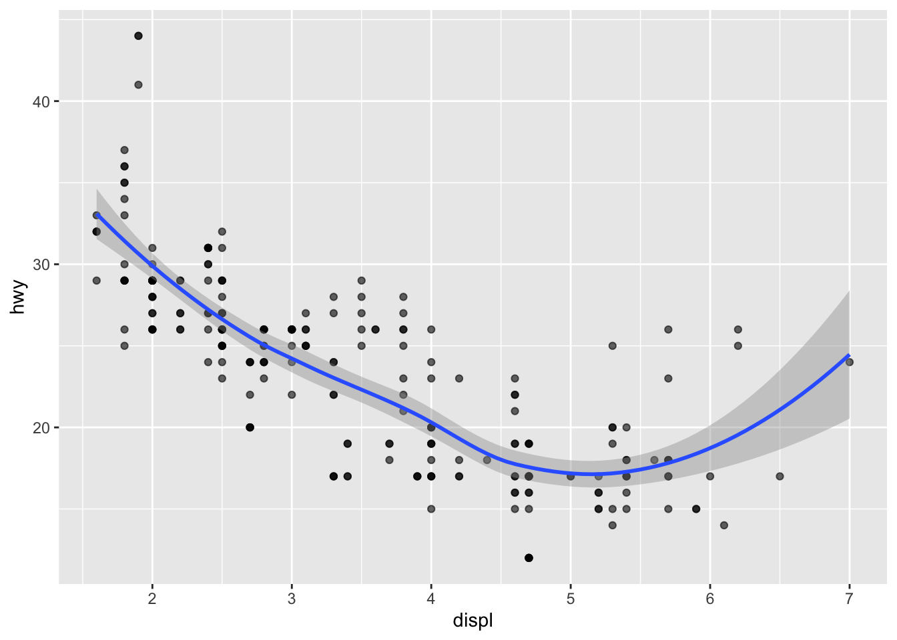
ggplot(mpg, aes(x = displ, y = hwy)) +
geom_point(alpha = 0.6) +
geom_smooth(method = "lm", se = FALSE)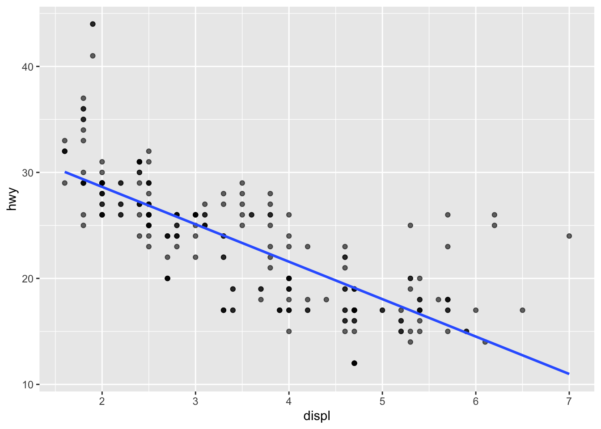
Facets create a grid of plots split by a group variable.
ggplot(mpg, aes(x = displ, y = hwy)) +
geom_point(alpha = 0.6) +
facet_wrap(~ class)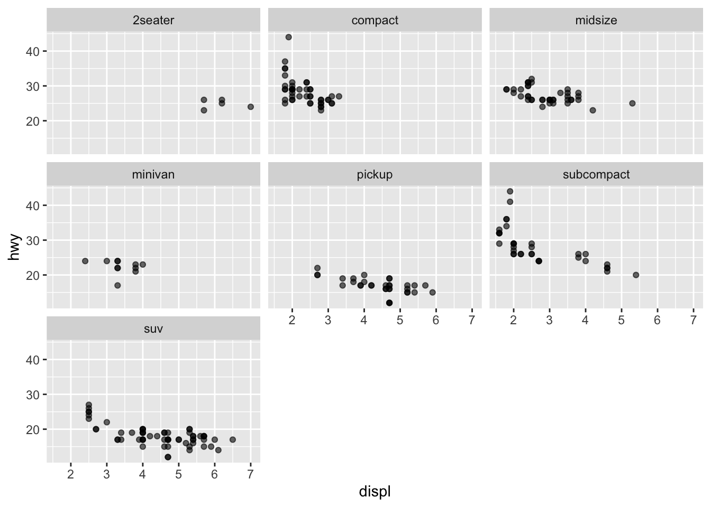
Bar charts are usually used for categorical variables.
ggplot(mpg, aes(x = class)) +
geom_bar()
ggplot(mpg, aes(x = class)) +
geom_bar() +
coord_flip()
ggplot(mpg, aes(x = class, fill = drv)) +
geom_bar()
Sometimes you want bars representing summary statistics (means, totals, etc.).
mpg_mean <- mpg |>
group_by(class) |>
summarise(mean_hwy = mean(hwy), .groups = "drop")
mpg_mean# A tibble: 7 × 2
class mean_hwy
<chr> <dbl>
1 2seater 24.8
2 compact 28.3
3 midsize 27.3
4 minivan 22.4
5 pickup 16.9
6 subcompact 28.1
7 suv 18.1ggplot(mpg_mean, aes(x = class, y = mean_hwy)) +
geom_col()
✅ geom_bar() counts rows automatically.
✅ geom_col() uses your own y-values.
Line charts require an x-variable that has a meaningful order (often time).
We will build a small example dataset.
sales <- tibble(
month = 1:12,
revenue = c(10, 12, 11, 13, 15, 18, 17, 20, 22, 23, 25, 28)
)
sales# A tibble: 12 × 2
month revenue
<int> <dbl>
1 1 10
2 2 12
3 3 11
4 4 13
5 5 15
6 6 18
7 7 17
8 8 20
9 9 22
10 10 23
11 11 25
12 12 28ggplot(sales, aes(x = month, y = revenue)) +
geom_line()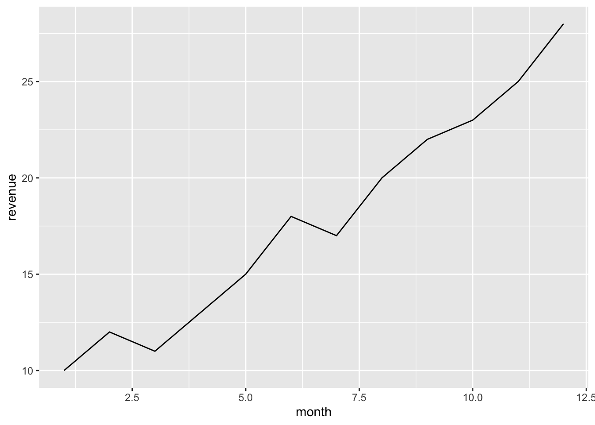
ggplot(sales, aes(x = month, y = revenue)) +
geom_line() +
geom_point()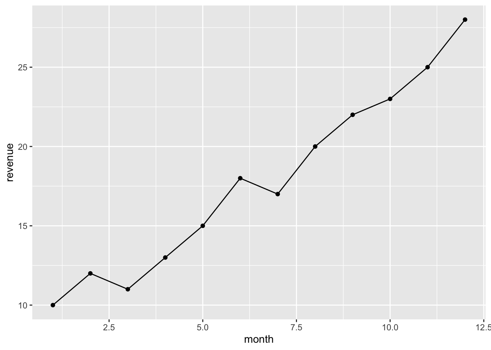
Use labs() to make your charts understandable.
ggplot(mpg, aes(x = displ, y = hwy)) +
geom_point(alpha = 0.6) +
labs(
title = "Engine Size vs Highway MPG",
subtitle = "Bigger engines usually get lower fuel efficiency",
x = "Engine displacement (liters)",
y = "Highway MPG",
caption = "Source: ggplot2::mpg"
)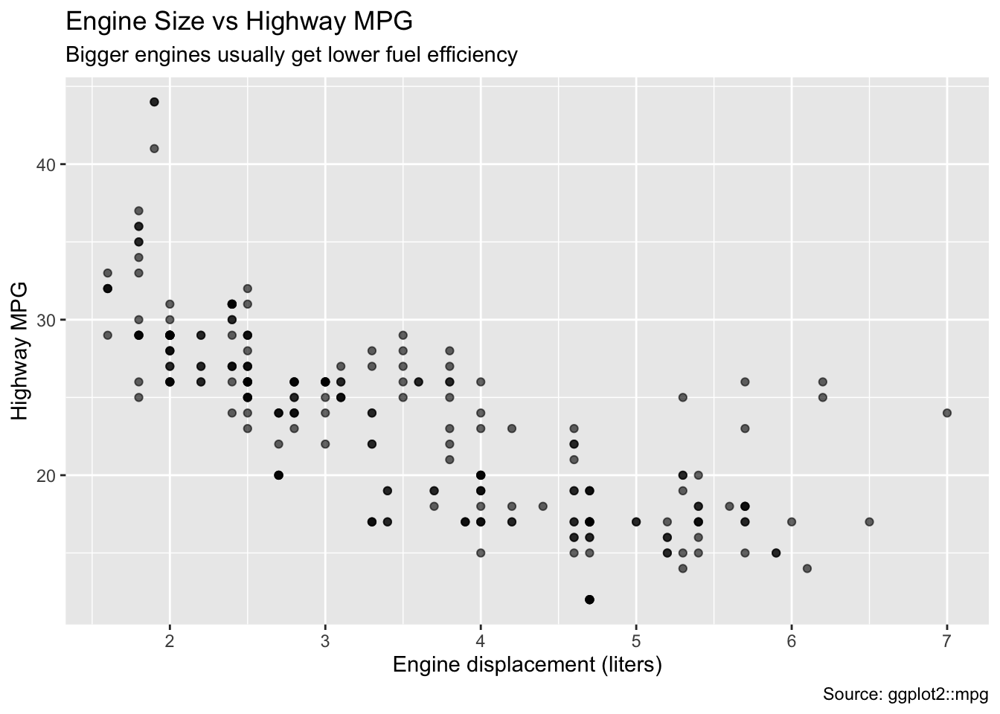
Themes change the overall style.
ggplot(mpg, aes(x = displ, y = hwy)) +
geom_point(alpha = 0.6) +
theme_minimal()Try a few common ones:
ggplot(mpg, aes(x = displ, y = hwy)) +
geom_point(alpha = 0.6) +
theme_classic()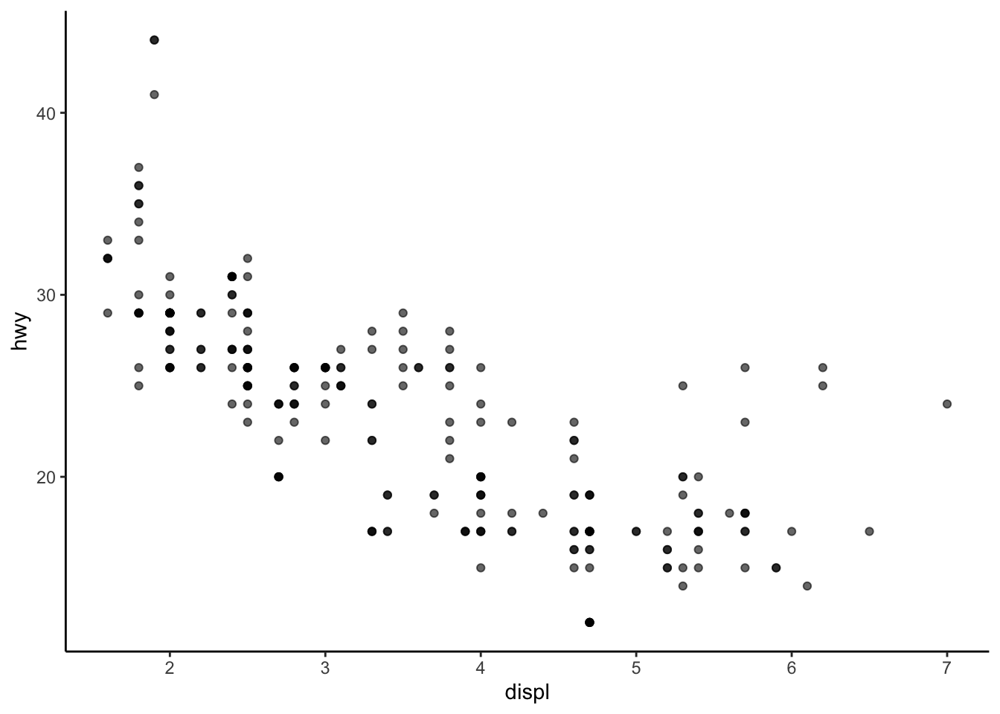
ggplot(mpg, aes(x = displ, y = hwy)) +
geom_point(alpha = 0.6) +
theme_light()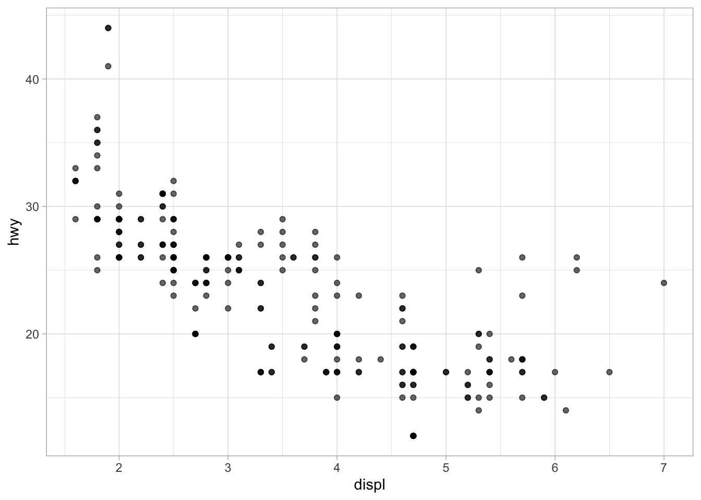
If you want a custom palette, you can set:
ggplot(mpg, aes(x = displ, y = hwy, color = class)) +
geom_point(alpha = 0.7) +
scale_color_brewer(palette = "Set2")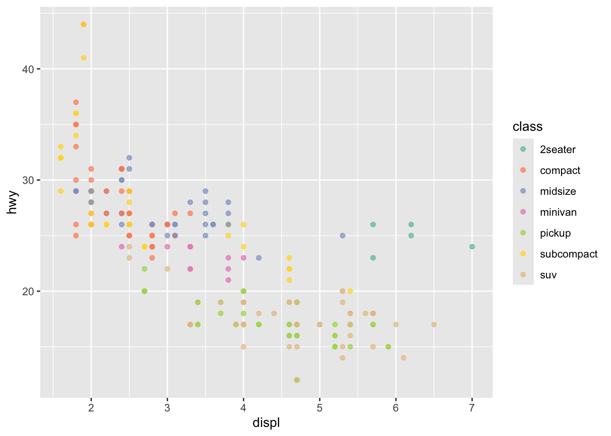
Or use a fixed color:
ggplot(mpg, aes(x = displ, y = hwy)) +
geom_point(alpha = 0.7, color = "steelblue")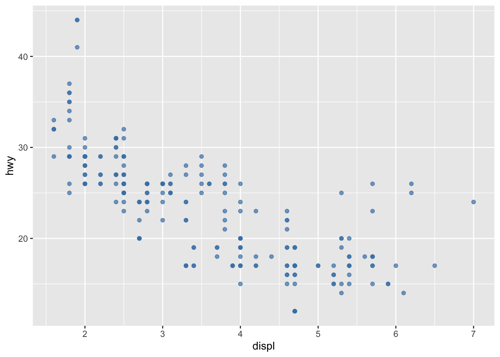
Use ggsave() to export a plot.
p <- ggplot(mpg, aes(x = displ, y = hwy)) +
geom_point(alpha = 0.6)
ggsave("my_scatterplot.png", plot = p, width = 7, height = 5, dpi = 300)cty vs hwy.drv and set alpha = 0.6.method = "lm", se = FALSE).facet_wrap(~ drv) to compare groups.manufacturer. Flip the axis using coord_flip().hwy by manufacturer (top 10 only).top10 <- mpg |>
count(manufacturer, sort = TRUE) |>
slice_head(n = 10)
top10# A tibble: 10 × 2
manufacturer n
<chr> <int>
1 dodge 37
2 toyota 34
3 volkswagen 27
4 ford 25
5 chevrolet 19
6 audi 18
7 hyundai 14
8 subaru 14
9 nissan 13
10 honda 9Now:
mpg to only these 10 manufacturershwy by manufacturergeom_col() plot